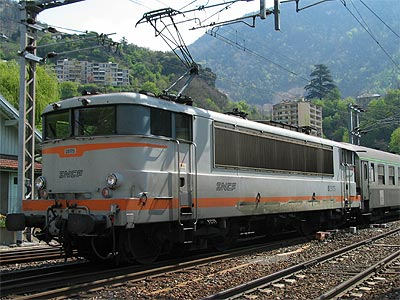
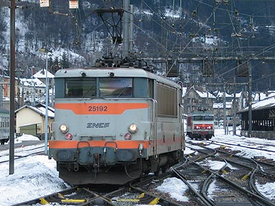
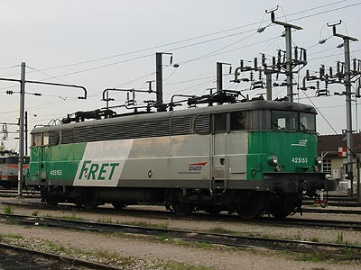
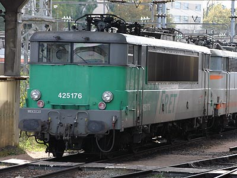

BB 25150
Les BB 25150 constituent l'évolution des BB 25100. Limitées également à 130 km/h, elles apportaient quelques améliorations semblables aux différences entre les BB 9200 et les BB 9300 : pupîtres ergonomiques, commande de frein PBL, enregistreurs de vitesse Teloc, boites à rouleaux. Elles furent livrées à partir de 1967, soit juste après la livraison des deux premières sous-séries de 25200 et deux ans après les 25100. C'est sans doute cet écart qui leur a valu une numérotation distincte (la 2nde sous-série de 25200 (25236 à 25246) avait reçu les mêmes améliorations sans numérotation spécifique).
Une première commande de 20 machines livrées de 1967 à 1969 est partagée entre :
- Chalindrey pour compléter le parc très sollicité des BB 25100 en service sur la transversale Nord-Sud entre Toul et Dijon,
- Chambéry qui en profite pour étoffer le parc vieillissant des prototypes Savoie et des CC 25000,
- Marseille, temporairement, qui attend la livraison de BB 25500, après quoi ce lot est renvoyé vers Chambéry.
Les BB 25150 font face à un trafic accru entre la Lorraine et Dijon et en Savoie où le réseau électrifié est étendu jusque Evian. Ces machines à couple 130 s'adaptent bien sur les lignes au profil dur.
Une seconde commande intervient en 1971. Elle est destinée à renouveler complètement le parc Savoie dépassé par l'engouement pour les sports d'Hiver. Les machines arrivent en deux temps. Les BB 25171 à 25175 sortent d'usine en 1974 sous le même aspect que les BB 25247 à 51 : Livrée verte à moustaches aluminium, persiennes inox et traverses renforcées pour recevoir l'atelage automatique (qui ne sera jamais adopté). Les 25176 à 195 sortent ensuite avec une livrée inédite reprennant les coloris des BB 9300. Les BB 25176 à 179 adoptent un graphisme prototype qui ne sera pas retenu. Finalement, la disposition du vert bronze et des bandeaux blancs s'inspirera de la livrée Oullins appliquée sur les BB 9200. Dès lors Chambéry s'accapare cette seconde sous-série qui sera surnommée les "BB Savoie". Les 25151 à 170 sont toutes affectées à Chalindrey en banalité avec les BB 25100.
Au début des années 90, les BB 25200 sont redistribuées vers la Bretagne et Rhone Alpes. Neuf BB 25150 Chambériennes sont envoyées à Rennes en échange pour leurs aptitudes au trains de fret. Le parc de Chalindrey part à Thionville. Plus tard, quelques engins des 2e et 3e sous-séries sont mutées à Thionville et Rennes.
L'amortissement de la première sous-série, au service de Fret, a commencé fin 2002, il ne subsiste que 3 machines en service fin 2006, radiées en 2007. Les locomotives de Chambéry, plus jeunes, sont encore au service des TER Rhône Alpes. Néanmoins, plusieurs engins victimes d'incidents sérieux n'ont pas été réparés. Fret s'est également séparé des quelques exemplaires de la 3ème sous-série affectés à Thionville bien qu'elles n'avaient pas 30 ans.
Enfin, pour pallier des radiations prématurées de BB 25200 TER Rhône Alpes,
les BB 25184, 194, 195, 180 et 183 ont été modifiées avec un couple 160 et renumérotées BB 25254, 255, 256, 258 et 259.
Plusieurs engins ont été revendus à l'opérateur privé Roumain GFR.
Les livrées
La livrée d'origine était identique à celle des BB 9200 et BB 16000 avec des fanaux rouges d'origine.
Le béton a touché la série avec des variations sur les teintes, la forme des moustaches ou des marquages.
La livrée Multiservice ne fut appliquée que sur la 25160.
La livrée "En Voyage" fut très brièvement appliquée sur la BB 25177 en Juin 2005. Malgré sa révision récente, la machine connut une sérieuse avarie en mars 2006 et ne fut jamais réparée.
Quelques machines Fret ont reçu la livrée du même nom.
Quelques données techniques
Constructeur : MTE Jeumont Schneider - Société des Forges et Ateliers du Creusot - Alsthom.
Tension d'alimentation : 1,5 kV continu, monophasé 25 kV 50 Hz
Chaîne de traction 1,5 kV : Banc rhéostatique commandé par graduateur
Chaîne de traction 25 kV : Graduateur HT, redresseurs silicium.
Motorisation : 2 moteurs par bogie
Puissance totale : 25 kV : 4130 kW ; 1,5 kV : 3400 kW
Longueur : 16,2 m (BB 25151 à 70), 16,680 m (BB 25171 à 95)
Masse : 88t
Pantographes : AM 18 B et AM 184
Vitesse maximum autorisée : 130 km/h
Machines remarquables de la série
BB 25164 : Cette machine s'est distinguée en 1969 en réalisant la première circulation d'essai sur le "Métro Express Régional", futur RER A, reprenant la ligne de Vincennes entre le nouveau terminus de Nation et Boissy St-Léger. Elle entame une seconde carrière en Roumanie au service de GFR.
Pour plus d'info :
Fiche technique des BB 25150 de Florent Brisou
L'inventaire des BB 25150 sur Trains du Sud-Ouest
Les mésaventures de la BB 25177 En Voyage sur EspaceTrain

La BB 25175, béton à fines moustaches. Moutiers-Salins (24/04/2004)

La BB 25191 à La Roche sur Foron (22/03/2003)

La BB 25192 à Modane (07/02/2004)

La BB 25153 à Vaires (05/10/2002)

La BB 25176 Fret à Mulhouse (23/10/2004)

La BB 25256, ex-25195, à St Jean de la Porte (22 janvier 2006)